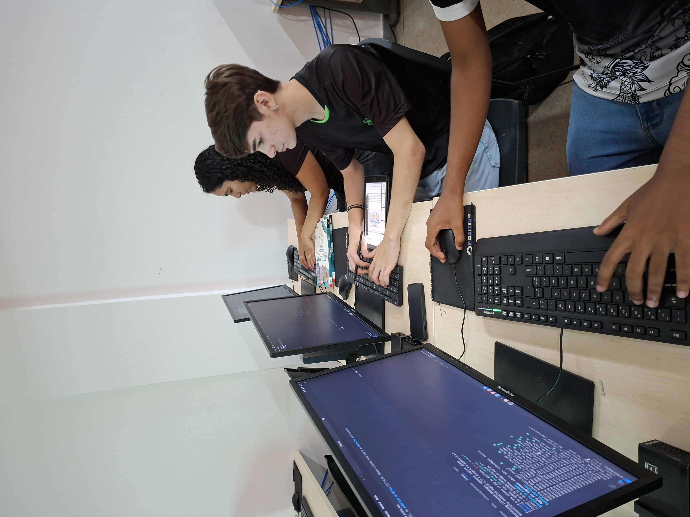

O suporte escolar definitivo para discentes do IFNMG
Materiais, aulas e questões focadas no seu curso técnico. Tudo num só lugar para você alcançar a excelência acadêmica.
Quero acessar a plataforma
Materiais, aulas e questões focadas no seu curso técnico. Tudo num só lugar para você alcançar a excelência acadêmica.
Quero acessar a plataformaSabemos que a rotina do Ensino Médio Integrado é desafiadora. O SOS IF nasceu da necessidade de centralizar conteúdos de qualidade para os cursos de Agropecuária, Informática e Vigilância em Saúde.
Nossa missão é garantir que nenhum aluno fique para trás, oferecendo suporte contínuo fora da sala de aula.

Acesso exclusivo a resumos, slides das aulas e apostilas separadas por disciplina e ano.
Perdeu alguma explicação? Assista a revisões e aulas gravadas pelos monitores e professores.
Treine seus conhecimentos com simulados específicos das matérias do seu curso técnico.